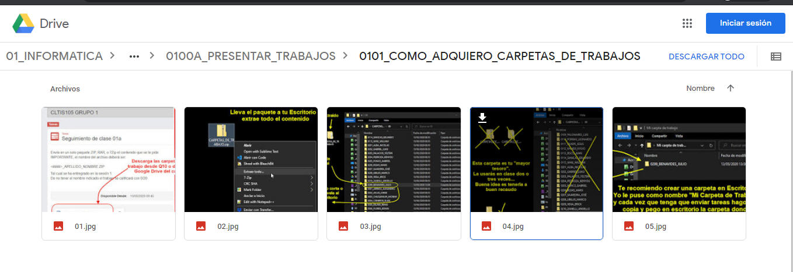
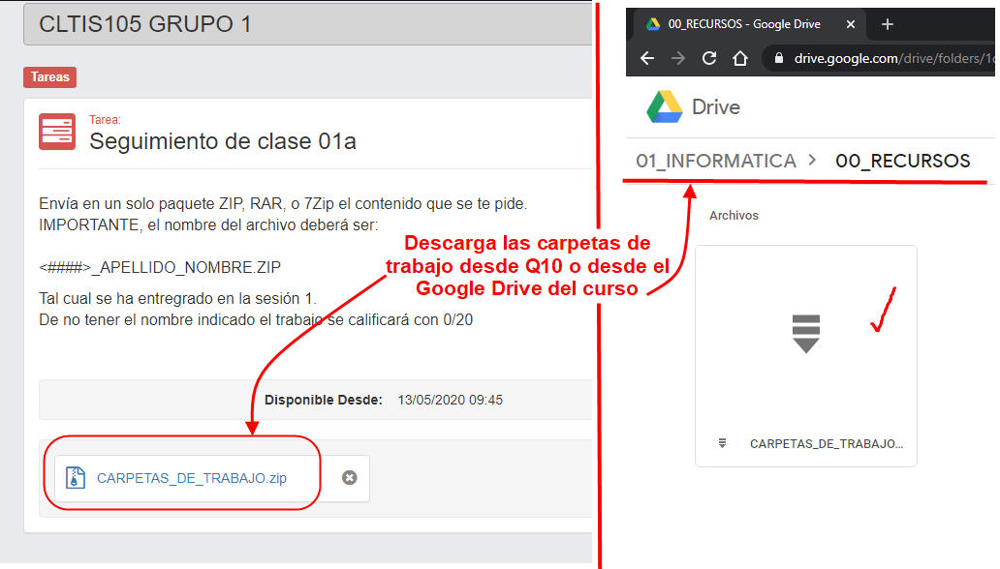
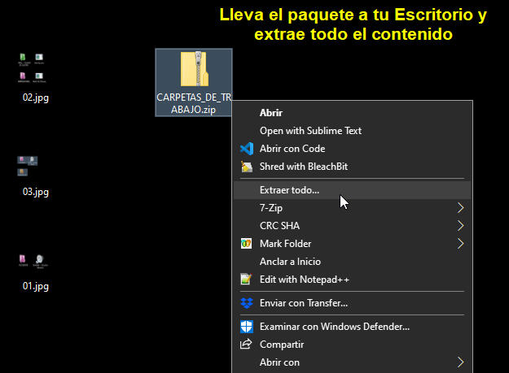
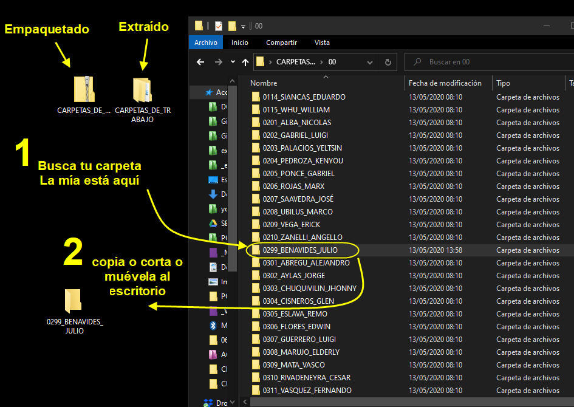
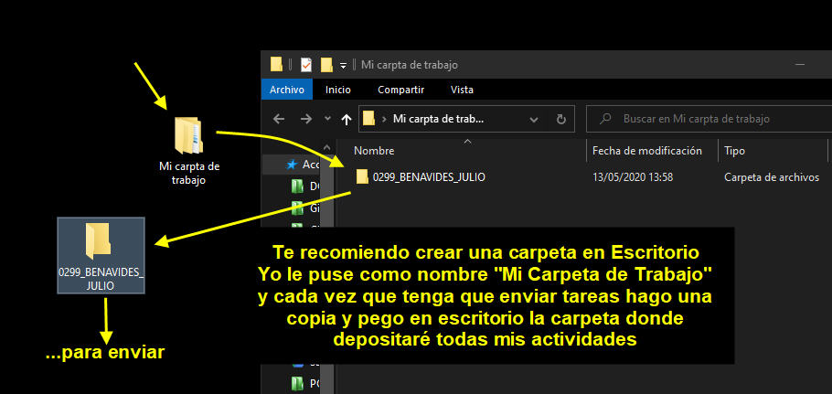
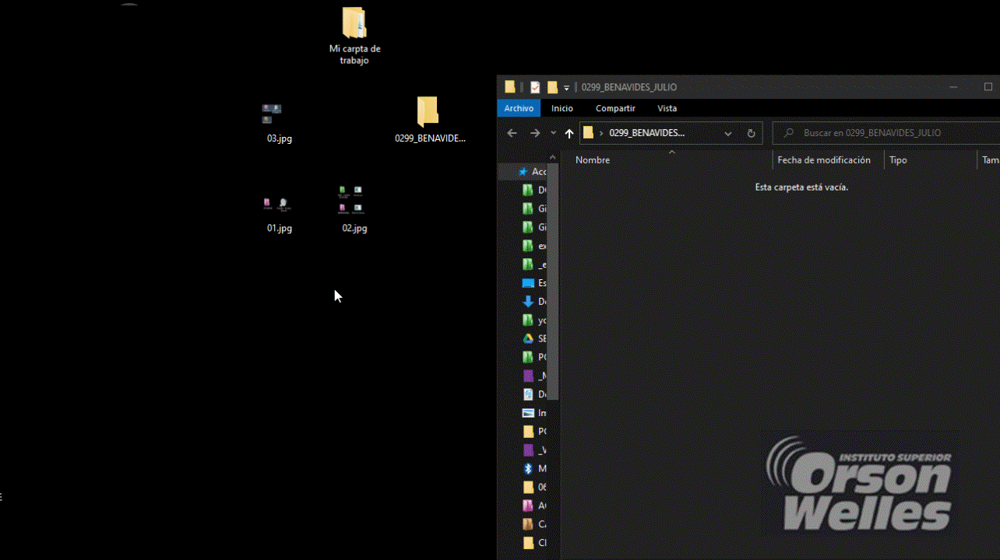

Instituto Superior Orson Welles
S01. Aprendiendo a trabajar remotamente
0101. Repasa lo fundamental
La carpeta 00_IMAGENES
En particular en este curso-taller te recomendamos
- Primero acceder al Google drive del curso a la carpeta 00_IMAGENES, ahí tendrás en imágenes enumeradas los pasos de cada procedimiento:

Por ejemplo si quiero repasar los pasos de cómo descargar la Carpeta_de_trabajo.ZIP la encontraré aquí (Es muy buena idea descargar las imágenes, llevarlas en el teléfono e ir viéndolas de vez en cuando)
Las imágenes consumen menos espacio que los vídeos y son más puntuales, ¡van al grano!

La página Web de la Unidad Pedagógica
Esta misma página web es un repositorio donde encontrarás en detalle lo fundamental de cada sesión. En muchos de los cursos encontrarás hojas similares.
A veces encontrarás fragmentos de estas páginas dentro del mismo Q10 dentro del recurso denominado CONTENIDO.
Algunas cosas que te esperan...
Si quieres saber algunas de las herramientas que el Instituto ha creado para asegurar tu formación aquí demostraremos algunas:
El siguiente ejemplo es para practicar un poco la conversión de números decimal a hexadecimal que se utiliza mucho en la programación de controladores MIDI, a continuación verás cómo un docente utiliza fragmentos de un vídeo para que practiques la identificación de las secciones de una composición, finalmente podrás ver un fragmento de sintetizador que puedes tocar con las teclas QWERTY del computador, teclado MIDI, el mouse... (no olvides primero poner <Start Engine> para que inicie -En Safari por restricciones de seguridad es probable que no funcione pero está probado en Chrome, Brave, Edge, FireFox:
0102. Observa y Trabaja
Dividir mi pantalla para ver dos aplicaciones a la vez
En nuestro taller te pediremos que hagas cosas, los procedimientos largos los haremos por partes y mientras observas cómo lo hacemos tendrás tú que ir haciéndolo en tu computador. Para esto es fundamental que sepamos cómo dividir la pantalla con las aplicaciones necesarias.
Te mostramos un ejemplo: Queremos ver el navegador Brave con una página en ella, al mismo tiempo que un programa de videoconferencia. Observa el procedimiento:
0103. Prepara tus producciones para el envío
Cómo descargo la carpeta de trabajo
Nuestro curso es prácticamente un taller donde, en cada sesión, tendrás que producir algo relevante para conseguir nuestro objetivo final.
Tus trabajos tendrán que seguir ciertas directivas y protocolos. Sólo así podrás tener una retro-alimentación rápida de tu progreso.
Primero tendrás que descargar el documento Carpetas_de_Trabajo.zip que encontrarás
- En el Q10 o
- En el Google Drive del curso:

Descárgalo y llévalo a Escritorio de tu computador.
Extrae el contenido del documento "Carpetas_De_Trabajo.ZIP"
Una vez que ya tengas el archivo en Escritorio extrae el contenido.
Simplemente darle clic derecho y escoger "Extraer todo" o algo similar...

Encuentra tu "mayor tesoro" para el curso
De todo el contenido extraído, "tu mayor tesoro" ¡Es tu propia carpeta!, aquella que lleva un número de orden y tu apellido y nombre.
Búscala, ponla a buen recaudo, haz copias pues tendrás que usar una nueva o varias nuevas durante las clases.
Todas las demás carpetas las puedes eliminar. Por ejemplo, en mi caso, encontré mi carpeta y la separé de las demás.

Además, previendo lo que se vendrá en el futuro...

Preparar los trabajos para el envío
Tus trabajos, en su mayoría, por lo general tendrás que enviarlo por el Q10. Quizá alguna que otra vez usemos la plataforma Google Classroom. Ya nos pondremos de acuerdo.
Sea como fuere tus trabajos debes comprimirlos en un solo paquete como en la siguiente animación te mostramos:
(La clave aquí es clic derecho - enviar - Carpeta comprimida)

0104. Retos y evaluación para la siguiente sesión
Retos para la siguiente sesión
En los primeros 20 minutos de la siguiente sesión, luego que hayas registrado tu asistencia, se te pedirá que:
- Envíen en un documento ZIP cuyo nombre sea <####>_tuApellido_tuNombre.ZIP que ya lo tienes desde la semana 1 (Carpetas_de_trabajo.ZIP) las siguientes imágenes comprimidas.
- Una captura de toda la pantalla del computador donde se muestre dividida el programa de videoconferencia y uno que se dirá en ese momento
- Una captura de toda la pantalla del computador donde se muestre dividida el programa de videoconferencia y otro que se dirá en ese momento
Importante:
- Los nombres y formatos de las imágenes deben ser 01.JPG y 02.JPG
- Cada imagen debe tener anotada dentro el nombre del estudiante
- Cada imagen debe mostrar la fecha y hora del sistema.
- No se aceptan archivos que no sean comprimidos (zip, rar, 7zip) y que no sea proveniente de Carpetas_De_Trabajo.ZIP
Ya lo sabes: ¡A practicar!
Reto: ¿Sabias que si a una carpeta le das clic derecho - Propiedades - Personalizar le puedes cambiar el icono?
¿Qué pasaría si en la evaluación de la próxima semana se te pide una captura de pantalla de una carpeta en Escritorio que tenga el icono modificado? ¿Lo resolverías?
S02. Captura de pantallas
Captura de pantallas
En nuestro curso-taller cada sesión tenemos que producir algún producto educativo. Entenderás que es poco práctico recibir proyectos creados en cualquier aplicación (Procesador de texto, hoja de cálculo, etc) por eso una solución propuesta es que envíes capturas de pantallas mostrando lo que se solicita. Ponemos en negrita esto pues si tu imagen no muestra lo que se te solicita será como si no hubieras enviado nada en absoluto.
Otro detalle que tenemos que tener en cuenta para que nuestro trabajo sea validado y calificado es que, la captura en imagen que presentes, cuente con los siguientes requisitos:
- Dentro de la imagen deberá estar anotado: Tu nombre, apellido y número de PC (esto último solo para los cursos presenciales concurrentes).
- El formato de la imagen tendrá que ser en JPG.
- El nombre del archivo será un número de dos dígitos y ordenados por solicitud: 01, 02, 03, etc.
Estos tres requisitos - obligatorios garantizarán que tengas una retro-alimentación a la brevedad y puedas ver en pocos días las revisiones y calificaciones de tu actividad. Así iremos avanzando en el dominio de las habilidades que tenemos que desarrollar.
Capturadores de pantalla
Como una actividad de investigación por tu propia cuenta, y sin necesidad de enviarla a nuestra plataforma, te encomendamos buscar un capturador de pantalla que te sirva para el curso.
¿Qué requisitos mínimos necesitas que tenga?
- Que permita guardar las capturas en JPG de manera automática.
- Que permita recordar lo que has escrito anteriormente, eso es clave para ahorrar tiempo; recuerda que cada imagen debe tener anotado tu nombre, apellido y número de PC (esto último si estás en el laboratorio del Instituto).
¿Por dónde empezar?
- Windows tiene incorporada una, llamada, "Herramienta de Recortes":
- Accede a ella con las teclas:
- Pregunta clave: ¿Cumple los requisitos mínimos necesarios?
- Pregunta clave 2: ¿Puede conjugarse esta herramienta con el historial de elementos copiados?
- Recuerda que Windows lleva la cuenta de un historial de copias para que puedas pegar donde quieras... Las teclas para invocar esta función es Windows + V. ¿Recuerdas dónde activarla?
Busca "Configuración de Portapapeles".
- Recuerda que Windows lleva la cuenta de un historial de copias para que puedas pegar donde quieras... Las teclas para invocar esta función es Windows + V. ¿Recuerdas dónde activarla?
- En el Google Drive del curso, en la carpeta 00_HERRAMIENTAS. Ahí se ha puesto el GreenShot y ShareX que son gratuitos para que los evalúes.
Busca la herramienta que más te amolde a tu trabajo. Recuerda que el tiempo es muy importante en la realización de nuestros trabajos.
Retos y evaluación para la siguiente sesión
La siguiente sesión tendrás que presentar imágenes varias, como la sesión anterior. Todas tus imágenes deberán tener de manera obligatoria:
- Nombre, apellido y Número de PC (Esto último solo si lo realizas en el Instituto), anotado dentro de cada imagen
- Formato de la imagen en JPG.
- Nombre del archivo: 01, 02, 03, etc.
- Fecha y hora que muestra el sistema. (No que hayas anotado tú de manera manual)
- Solo para cursos en presencial-remoto: Todos los trabajos van en un solo archivo ZIP o RAR. El nombre del archivo es el mismo nombre de tu Carpeta_De_Trabajo.
Basta que uno de estos requisitos no estén presentes se calificará la actividad con 0 / 20
Mira los 00_ERRORES_COMUNES.S02 para estar alerta de los yerros que hemos cometido al respecto.
También tendrás que resolver un cuestionario teórico y a continuación te dejamos un simulacro:
Simulacro de cuestionario
Pon a prueba el conocimiento mínimo teórico que hasta hoy hemos visto en nuestro taller:
Obra publicada con Licencia Creative Commons Reconocimiento Compartir igual 4.0